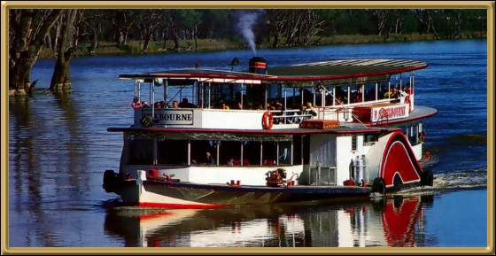

Mildura is a huge fruit and vegetable producing area. It is quite an attractive town, up on the border of Victoria and New South Wales. This is one of the steamers that regularly go up and down the Murray river in the area, mainly for tourists. It's a fun trip to take.
Photographer: Unknown